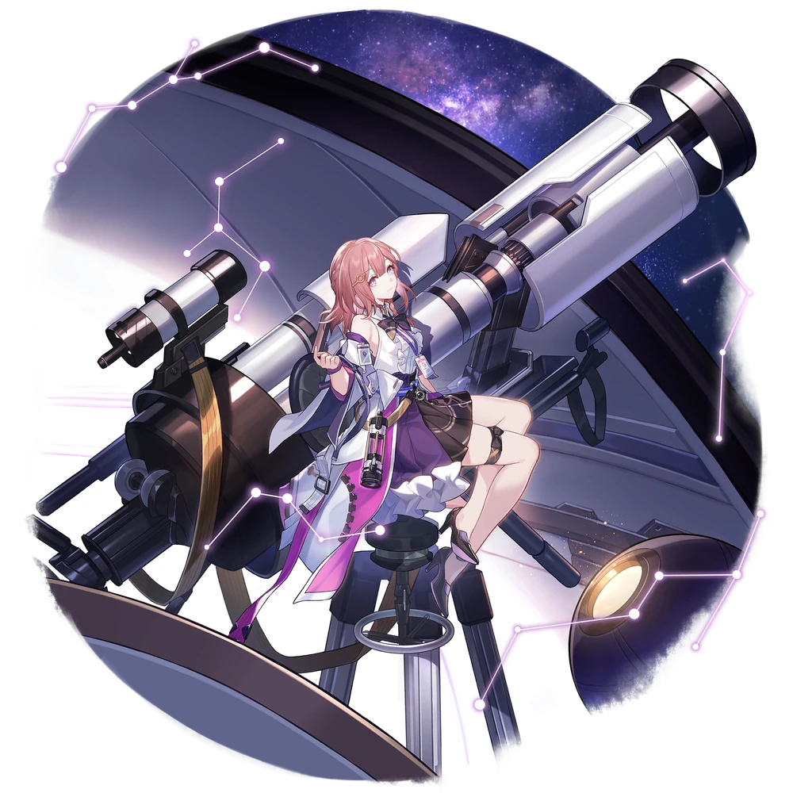

| Nome | Asta |
|---|---|
| Elemento | Fogo | Raridade | ✦ ✦ ✦ ✦ |
| Caminho | A Harmonia |
| Sexo | Fêmea |
| Especie | Humano |
| Facção | Estação Espacial de Herta | Mundo | Estação Espacial de Herta | Como obter | Tutorial de Warp na missão Um Momento de Paz,Qualquer Banner Warp | Data de Lançamento | 2023-04-26 | Adicionado pela primeira vez | Versão 0.6.0 |
Ascensões e estatísticas
| Fase de Ascensão | Level | Base HP | Base ATK | Base DEF | Base SPD |
|---|---|---|---|---|---|
| 0✦ | 1/20 | 139 | 69 | 63 | 106 |
| 20/20 | 271 | 135 | 122 | 102 | |
| 1✦ | 20/30 | 327 | 163 | 148 | 106 |
| 30/30 | 396 | 198 | 179 | 106 | |
| 2✦ | 30/40 | 452 | 226 | 204 | 106 |
| 40/40 | 522 | 261 | 236 | 106 | |
| 3✦ | 40/50 | 577 | 288 | 362 | 106 |
| 50/50 | 647 | 323 | 292 | 106 | |
| 4✦ | 50/60 | 702 | 351 | 318 | 106 |
| 60/60 | 772 | 386 | 349 | 106 | |
| 5✦ | 60/70 | 828 | 414 | 364 | 106 |
| 70/70 | 897 | 448 | 406 | 106 | |
| 6✦ | 70/80 | 953 | 476 | 431 | 106 |
| 80/80 | 1,023 | 511 | 463 | 106 |
| Nível | Custo de Evolução | Materiais de Ascensão do Personagem | Materiais Necessários |
|---|---|---|---|
| 0 → 1 ✦ |  3.200 3.200 |
||
| 1 → 2 ✦ | 6,400 |
||
| 2 → 3 ✦ | 12,800 |
 2 2 |
 5 5 |
| 3 → 4 ✦ | 32,000 |
5 |
8 |
| 4 → 5 ✦ | 64,000 |
15 |
 5 5 |
| 5 → 6 ✦ | 248,000 |
28 |
7 |
Habilidades de combate
| Icone | Tipo | Nome | Descrição | Marcação | Energia | Resistência DMG |
|---|---|---|---|---|---|---|
 |
ATK básico | Feixe de Espectro | Causa Fire DMG igual a 50%–130% do ATK de Asta para um único inimigo. | Alvo único | Geração: 20 | 30 |
 |
Skill | Tempestade de Meteoros | Causa Fire DMG igual a 25%–62,5% do ATK de Asta a um único inimigo e ainda mais DMG por 4 vezes extras, com cada vez causando Fire DMG igual a 25%–62,5% do ATK de Asta a um inimigo aleatório. | Quicar | Geração: 6 × 5 (E0) 6 × 6 (E1) | 30 (Primeiro Acerto) 15 (Acertos Subseqüentes) |
| Ultimate | Bênção Astral | Aumenta o SPD de todos os aliados em 36–57 por 2 turno(s). | Apoiar | Custo: 120 Geração: 5 | ||
| Talento | Astrometria | Ganha 1 pilha de Carregamento para cada inimigo diferente atingido por Asta, mais uma pilha extra se o inimigo atingido tiver Fraqueza de Fogo. Para cada pilha de Charging Asta, o ATK de todos os aliados aumenta em 7,0%–17,5% , até 5 vez(es). A partir de seu segundo turno, a contagem de pilha de carregamento de Asta é reduzida em 3 no início de cada turno./td> | Apoiar | |||
| Técnica | Flash Milagroso | Imediatamente ataca o inimigo. Depois de entrar na batalha, causa Fire DMG igual a 50% do ATK de Asta para todos os inimigos. | 60 |
Eidolons
| Icone | Nome da habilidade | Nivel | Descrição |
|---|---|---|---|
| Estrela Canta Sem Versos ou Vocais | 1 | Ao usar Skill, causa DMG por 1 vez extra a um inimigo aleatório. | |
| A Lua Fala em Crescente e Minguante | 2 | Depois de usar seu Ultimate, as pilhas de carregamento de Asta não serão reduzidas no próximo turno. | |
| Chuvas de meteoros para desejo e desejo | 3 | Habilidade Nv. +2, até um máximo de Lv. 15. Talento Nv. +2, até um máximo de Lv. 15. | |
| Aurora se deleita em beleza e felicidade | 4 | A taxa de regeneração de energia de Asta aumenta em 15% quando ela tem 2 ou mais pilhas de carregamento. | |
| Nebulosa se isola no cosmos frio | 5 | Nível final +2, até um máximo de Lv. 15. ATK Básico Lv. +1, até um máximo de Lv. 10. | |
| Sonhos da Galáxia em calma e conforto | 6 | A(s) pilha(s) de carregamento perdida(s) em cada turno é(são) reduzida(s) em 1. |
Traços
| Custo Total (1 → 6 para rastreamento de ATK básico) | ||||||
|---|---|---|---|---|---|---|
| 192.000 |
5 |
5 |
 2 2 |
 6 6 |
 8 8 |
| Custo total (1 → 10 para um rastreamento) | ||||||||
|---|---|---|---|---|---|---|---|---|
| 522.000 |
10 |
5 |
2 |
12 |
23 |
 3 3 |
 1 1 |